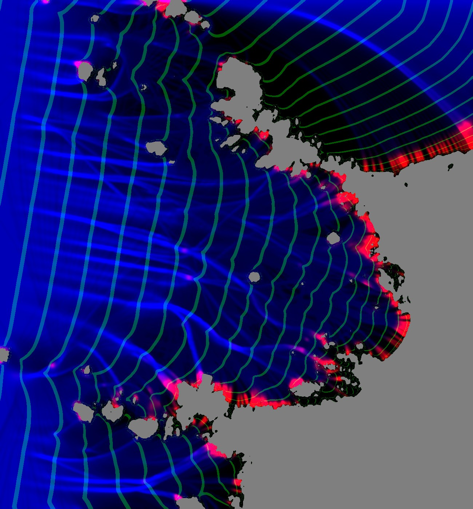
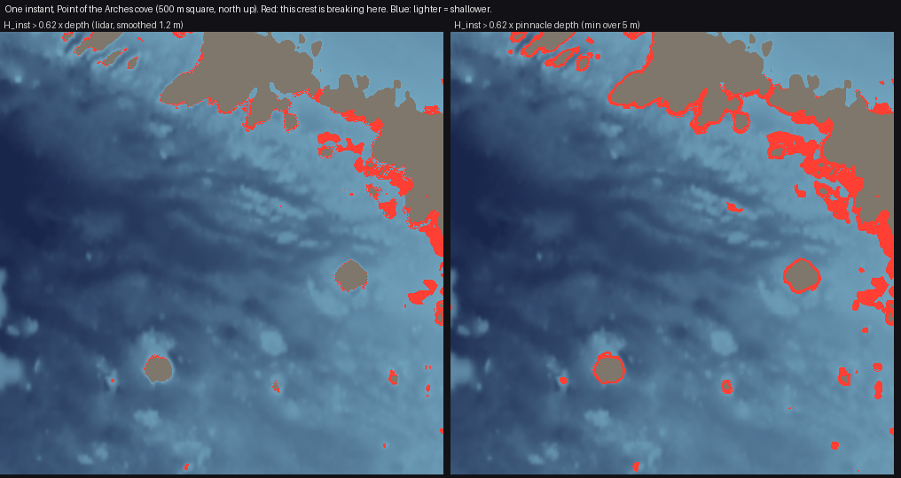
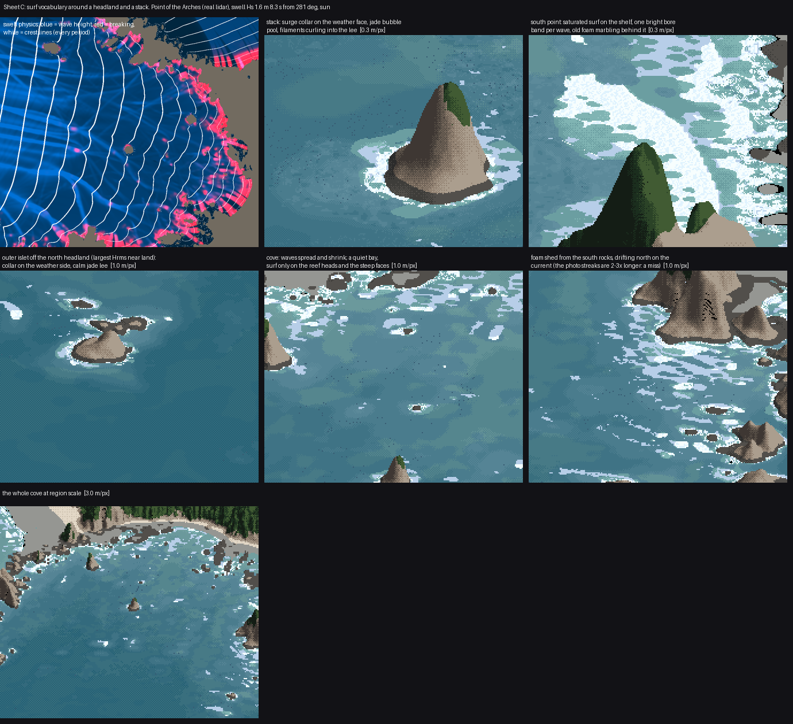

2. Swell over the real bathymetry
What it's for. It decides where the waves are big, where they break, and which way the crests run, from nothing but depth. This is the part that turns "rings around the shore" into "white on the reef heads, quiet in the cove". Every mark on the later pages is keyed to the three fields it produces: wave height H, crest travel time t, and propagation direction k.
Code: code/sea/waves.py (wavenumber, speeds, swell, eikonal), and crest_break in code/sea/sim.py.
The model system: a refraction diagram
The Shore Protection Manual's chapter 2 draws refraction as orthogonals: lines perpendicular to the crests, bent by Snell's law as the water shallows. Wave height changes with the spacing of neighbouring orthogonals. When they converge, energy concentrates; when they diverge, it spreads:
H = H₀ · K_s · K_r, K_s = √(c_g0 / c_g), K_r = √(b₀ / b)
Its figure 2-17 is an aerial photo of the crests doing exactly that off Long Island:

SPM (1984) p. 2-61, wave refraction at Westhampton Beach.
Linear dispersion gives the speeds, ω² = g k tanh(k d). Phase speed is c = ω/k, and group speed is c_g = n·c with n = ½(1 + 2kd / sinh 2kd). I solve it vectorised with Newton's method:
def wavenumber(omega, d):
d = np.maximum(np.asarray(d, float), 0.05)
x = omega ** 2 / G * d
kd = np.where(x < 1, np.sqrt(x) * (1 + x / 6), x) # start
for _ in range(12):
t = np.tanh(kd); f = kd * t - x; df = t + kd * (1 - t * t)
kd = kd - f / df
return kd / d
Step 1. Rays for height
swell() launches a line of rays 0.5 m apart, upwind of the grid, and marches them in 0.5 m steps. Each ray turns toward slower water:
dot = gcx * KX + gcy * KY # grad c along the ray
KX2 = KX - ds / cc * (gcx - dot * KX); KY2 = KY - ds / cc * (gcy - dot * KY)
Each ray carries an energy flux F = E·c_g·b. Its height comes from the local tube width b, which is the distance to its neighbours, minus the Battjes and Janssen (1978) random-wave dissipation where it breaks:
E = F / (np.maximum(cg, 1e-3) * bw)
Hrms = np.sqrt(8 * np.maximum(E, 0))
Hm = 0.88 / k * np.tanh(gamma * k * dbk / 0.88) # the height a wave can hold at this depth
... # Q from (1-Q)/(-ln Q) = (Hrms/Hm)^2
D = 0.25 * alpha * Q * Hm ** 2 / T
F = np.where(m, np.maximum(F - D * bw * ds, 0), F)
The rays refract over depth smoothed by 8 m, not 1 m; at 1 m every boulder bends them. Rays are splatted onto the grid and normalised. Rays die when they hit rock, and the lee of each stack is filled by a broad blur that stands in for diffraction.

My first ray solve (notes/poa_waves.png). Blue is wave height and red is breaking. The green bands are every crest, taken from ray travel time. The crests are good offshore, but behind the big headland (upper right) they fan out from the tip of the rock: a ray shadow, filled with nonsense.
Step 2. Travel time for the crests
Rays leave shadows, and crests don't. A crest is a line of equal travel time, and in the lee the first wave to arrive is the one that bent round the rock. That is a shortest-path problem: |∇t| = 1/c, solved by Dijkstra on a 2 m grid with a 16-neighbour stencil. The source is a super-source joined to every upwind boundary cell, with a delay equal to the plane wave's arrival there:
proj = (xx * kx0 + yy * ky0) * cell # distance along the swell direction
upwind = border & (proj < np.percentile(proj[border], 60)) & ~landc
s_nodes = idx[upwind]; s_w = (proj[upwind] - proj[upwind].min()) / c0 + 1e-3
rows.append(np.full(s_nodes.size, src)); cols.append(s_nodes); vals.append(s_w)
...
t = dijkstra(A, directed=True, indices=src)[:src].reshape(H_, W_)
(The water study used the same super-source idea; I took it from there.) With t, the phase at any place and moment is q = ((t_now − t)/T) mod 1: 0 as a crest passes, rising to 1 just before the next. Every mark on later pages is keyed to q.

The same cove with crest lines from the travel-time solve. They wrap into the lee of the headland and bend round each stack, and they close up as they slow over the shallows. The rays still give the height.
What it said: coves are quiet, headlands are loud
This was the observation I'd have missed if I'd drawn it. Along a transect into the cove, Hrms falls from 1.08 m offshore (19 m deep) to 0.85 m (14 m), 0.56 m (10 m) and 0.47 m (6 m), with no breaking at all. The rays diverge over the cove's bowl and converge on the points. It's the SPM's textbook figure, measured on a real place. It's also exactly why a uniform surf band around every shore looks false: the photo's cove has a calm middle, and white only on the points, the stacks and the reef heads.
Step 3. The pinnacle depth: why reef heads break
My first coupled render had almost no white on the reef heads, and the photo has a crescent on each. Two things were wrong. One I'll call the decoy.
The decoy. Ray-tube width came from the distance to the neighbouring rays. A ray that hits rock freezes where it stops. Its living neighbours kept measuring their width against the frozen one, which drifts ever further behind, so their tubes looked wide and their energy looked spread thin. I found it by logging tube width along the march:
(it, median tube width, flux, Hrms, cg, depth, alive rays)
(500, 5.40, 1.125, 0.499, 6.80, 7.3, 313)
(600, 8.00, 1.124, 0.473, 5.90, 4.7, 228) <- width pinned at the 8x clip
The fix counts only living neighbours, and none across a dead ray:
ia = np.nonzero(alive)[0]
dxa = np.hypot(np.diff(X[ia]), np.diff(Y[ia]))
dxa = np.where(np.diff(ia) == 1, dxa, np.nan) # across a dead ray: unknown
It was a real bug, and fixing it raised the median Hrms over reef heads shallower than 3 m from 0.50 to 0.57 m. But the offshore-to-cove profile didn't move, and the reef heads still barely broke. I wrote in my lessons that this bug was the cause. It wasn't, and I'm correcting that here. The spreading over the cove is real; the rays measured it correctly.
The cause. The breaking test compared each crest's height with a smoothed depth, and the 1 m lidar has already blurred the pinnacles a wave actually feels. A reef head that reaches 0.8 m in reality is 2 m in the grid. So breaking uses the shallowest depth within 5 m:
self.db = nd.gaussian_filter(-nd.maximum_filter(-np.maximum(d, 0.02), 5), 1.0) # reef pinnacles the 1 m lidar blurs
...
Hm = self.params['gamma_i'] * self.db
brk = (Hinst > Hm) & ~self.land

figs.py pinnacle. The same instant, the same crest heights. Left: tested against the smoothed lidar depth, 5,875 breaking cells in the crop. Right: against the pinnacle depth, 12,368, and the reef heads in the middle of the cove light up as separate patches. Compare the photo's scatter of white crescents in how-to 1.
This is Gilland's sentence made operational: the outline of the foam is the outline of the reef, but of the reef's highest points, which a smoothed depth has erased.
Step 4. One crest at a time
swell() gives Hrms, an average over a random sea. The picture needs individual waves: this crest breaks on that reef, the next one doesn't. crest_break gives every crest its own height. The crest number is floor((t_now − t)/T), and a Rayleigh-distributed multiplier is hashed on that number and on 30 m cells along the crest, then smoothed, so a crest's height swells and fades along its length:
n = np.floor((t - self.tt) / T) # crest index
cell = np.floor(self.s_along / 30.0)
r1 = hash2(n, cell, self.seed); r2 = hash2(n, cell + 1, self.seed)
f = (self.s_along / 30.0) - cell; f = f * f * (3 - 2 * f)
u = r1 * (1 - f) + r2 * f
g = np.sqrt(-np.log(np.clip(1 - u * 0.985, 1e-4, 1))) * 1.0 + 0.12 * self.g_field
Hinst = self.Hrms * g
The same hash always gives the same crest, so an animation frame is just another t_now. gamma_i = 0.62 is lower than the textbook 0.78. That's partly because Hrms under-represents the big waves, and partly a tuning to the photo; I first blamed it for the storm's failure; how-to 7 has the measurement that cleared it.
Physics map

sheetC.py, top left: wave height (blue), breaking (red) and crest lines (white) for the summer swell. The other panels are what the painter makes of it, labelled.